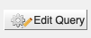

QueryBuilder
You can setup your own queries by using the QueryBuilder. The builder is a powerful tool that allows the user to create queries that can span different classes in WormMine and overall different sources of information.
The easiest way to get acquainted with the QueryBuilder is to edit and modify a template (just click on the
Edit Query button ). The builder can be also accessed by clicking on the
Select a Data Type to Begin a Query box from the QueryBuilder page, or by clicking the name of the class in the
Data Model page. By clicking on the class name, it will bring the builder interface shown below.